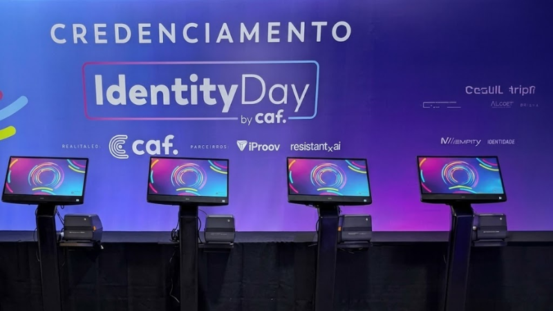

Reduza drasticamente o tempo de espera na recepção e otimize a mão de obra da sua portaria. Fornecemos totens de autoatendimento modernos, ergonômicos e equipados com interfaces touchscreen de alta precisão, garantindo a busca instantânea e a impressão térmica de crachás sob demanda em segundos.
Gerenciar picos de chegada em grandes convenções e feiras exige uma infraestrutura de hardware resiliente e veloz. Os totens de autoatendimento da Worknet descentralizam o fluxo de recepção, permitindo que o participante realize sua própria validação de entrada de forma autônoma. O terminal busca instantaneamente no banco de dados local por CPF/CNPJ, digitação parcial do nome ou leitura do QR Code do pré-cadastro. Equipados com gabinetes industriais e impressoras térmicas integradas, operam com contingência offline ativa, garantindo a emissão contínua do crachá mesmo sem internet no pavilhão.
Mecanismos de impressão industrial sob demanda acoplados ao totem, emitindo crachás com alta definição de código de barras ou QR Code.
Sincronização e processamento em servidores locais dedicados, mitigando paralisações por instabilidade de rede.
Displays capacitivos industriais com layouts responsivos, otimizados para navegação rápida e acessível.
Software parametrizado para Português, Inglês e Espanhol, ideal para feiras globais e congressos estrangeiros.
Acompanhamento em tempo real dos insumos (bobinas) e status de hardware de cada totem pelo dashboard da TI.
Estruturas metálicas com design premium e acabamento corporativo, ocupando menor área física.
Os totens são configurados com a identidade visual do evento e informações personalizadas na interface.
A base de dados de participantes é sincronizada com os totens para busca instantânea.
Os totens são instalados nos pontos estratégicos do evento e testados exaustivamente antes da abertura.
Os participantes operam os totens de forma autônoma com nossa equipe monitorando remotamente.

Entre em contato e receba uma proposta personalizada para o seu evento.